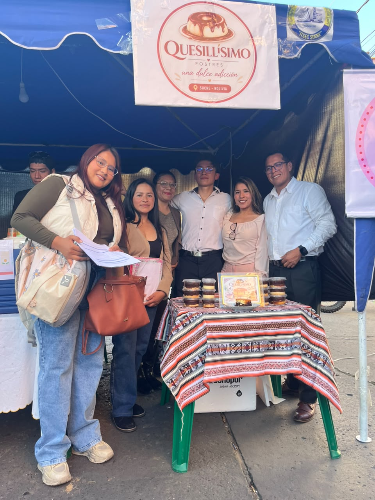
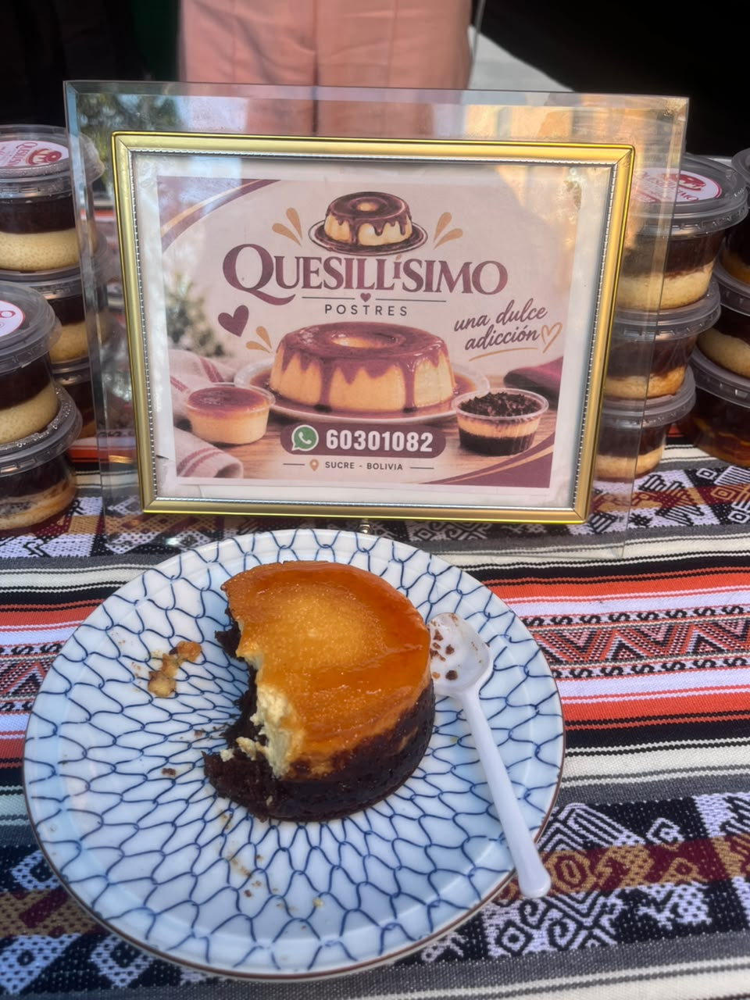
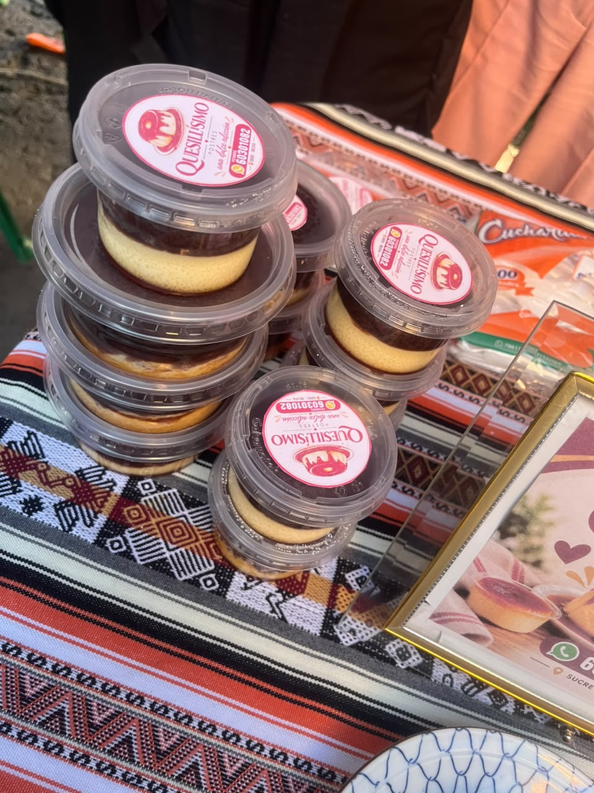

FEXPO ITSEC 2026 - ¡Bienvenidos!
En la FEXPO ITSEC Sucre se presentan diferentes emprendimientos que destacan por su creatividad y sabor. Entre ellos se encuentra Quesillísimo, un negocio dedicado a la elaboración y venta por pedido de deliciosos postres inspirados en el quesillo venezolano, ideales para compartir en diferentes ocasiones.



Quesillísimo es un emprendimiento gastronómico dedicado a la preparación de quesillo venezolano, un postre conocido por su textura suave, consistencia cremosa y delicioso sabor dulce. Su propuesta busca ofrecer una experiencia agradable a quienes disfrutan de los postres artesanales.
Entre sus variedades se encuentra el quesillo tradicional y el quesillo de chocolate, una alternativa para quienes prefieren un sabor diferente. La variedad de presentaciones permite que los clientes elijan el postre de acuerdo con sus gustos, necesidades y presupuesto.
El emprendimiento ofrece diferentes tamaños, desde presentaciones pequeñas de 6 bolivianos hasta opciones grandes de 70 bolivianos. Esta variedad permite atender tanto a quienes desean disfrutar de un postre individual como a quienes necesitan una presentación para compartir en reuniones, celebraciones o acontecimientos especiales.
Quesillísimo trabaja exclusivamente mediante pedidos y no cuenta con una tienda física. Esta modalidad le permite organizar la preparación de sus productos según las solicitudes de los clientes y elaborar las cantidades necesarias para cada encargo.
La atención por pedido también representa una oportunidad para planificar la compra de ingredientes, organizar los tiempos de preparación y reducir el desperdicio de alimentos. Una buena coordinación con los clientes es importante para cumplir con las fechas y cantidades acordadas.
El objetivo de Quesillísimo es ofrecer postres de buena calidad, con sabores agradables y distintas presentaciones, buscando satisfacer a sus clientes y construir una relación de confianza que favorezca las recomendaciones y los futuros pedidos.
La participación de Quesillísimo en la FEXPO ITSEC permite dar a conocer sus productos, mostrar su propuesta gastronómica y demostrar cómo una iniciativa basada en la elaboración de postres puede convertirse en una oportunidad de negocio.